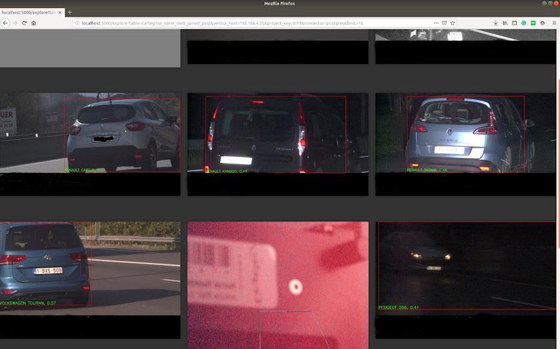

Visualization¶
Grâce à iaflash/app/app.py , on peut visualiser un dataset Postgres, Vertica ou encore un csv. Il faut lancer un petit serveur flask pour cela, et rediriger le port du serveur (APP_PORT défini dans iaflash/docker/conf.list) vers celui de la machine locale.
On peut vérifier que l’application est en route en tapant http://localhost:5000.
Il y a 2 routes importantes, explore et csv. S’il y a une des colonnes avec x1,..,y2 , target ou pred_class, l’application va les afficher automatiquement.
Arguments¶
Dans args, on peut mettre les même arguments que filter.py et ainsi choisir la table à visualiser et les filtres.
Exemple sur la table CarteGrise_norm_melt_joined_psql.
Cela donne :
Il faut séparer les arguments de filter par un &.
Csv path¶
Ici args ne reprend pas les arguments de filter car filter fonctionne sur des tables SQL et non pas des csv. Pour faire des recherches avancées sur un csv, on peut utiliser l’argument query qui fonctionne comme la méthode de query sur une dataframe. Par exemple :
Si on veut voir les jeux de données en sortie de la commande filter, de la classe 1: http://localhost:5000/csv/model/resnet18-151-refined/test.csv?limit=1000&query=target==1
Si on recherche une image: http://localhost:5000/csv/model/resnet18-151-refined/test.csv?query=img_path.str.contains(%2208529_20180115_064334_00018_2%22)